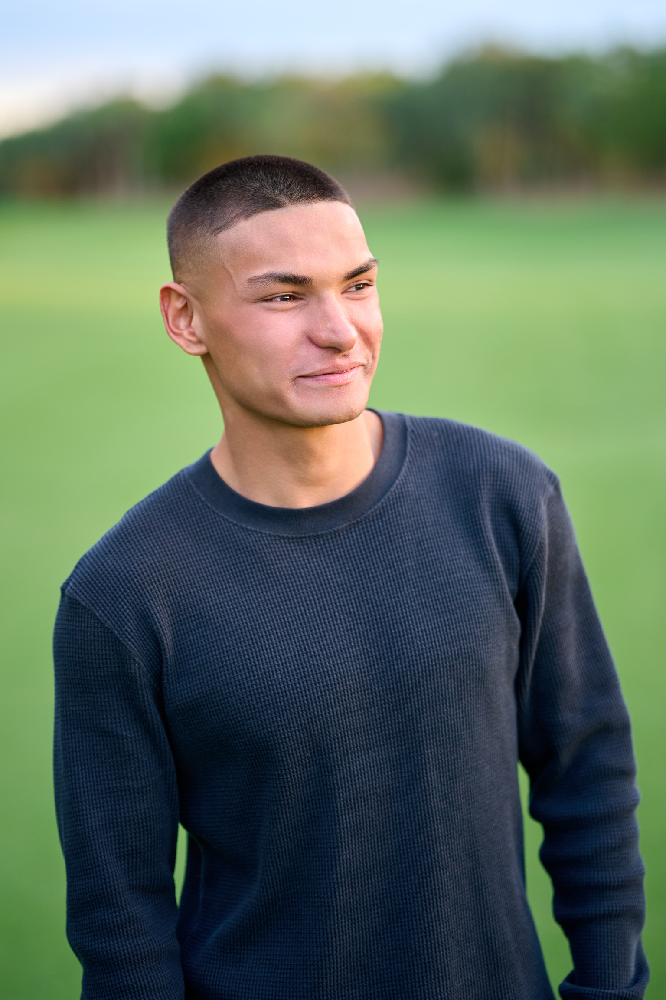
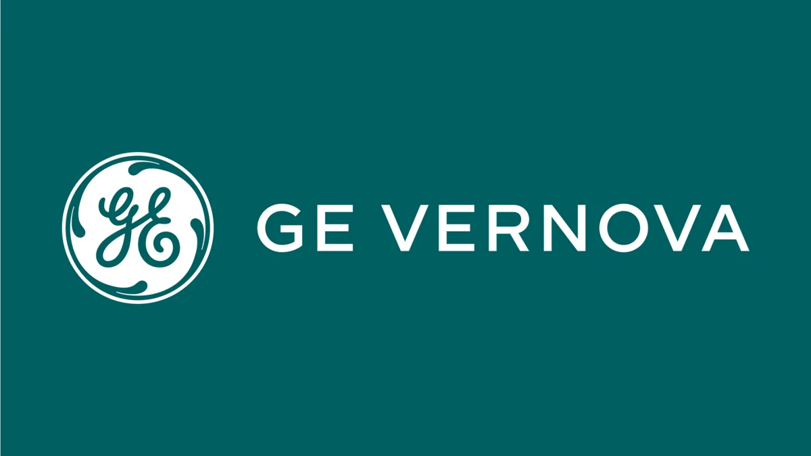
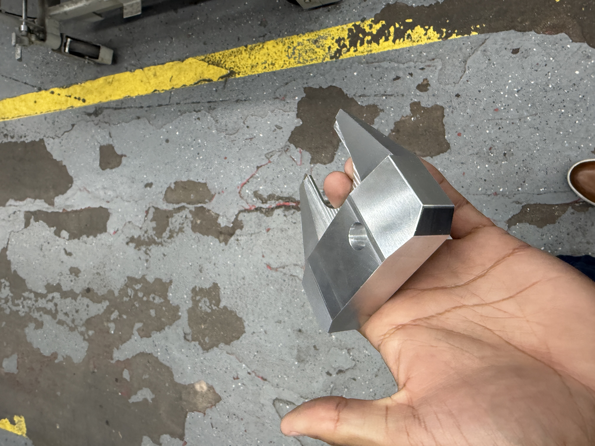
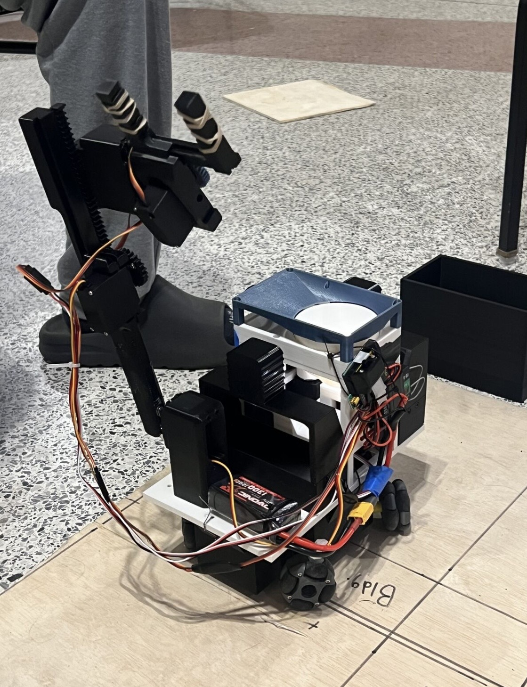
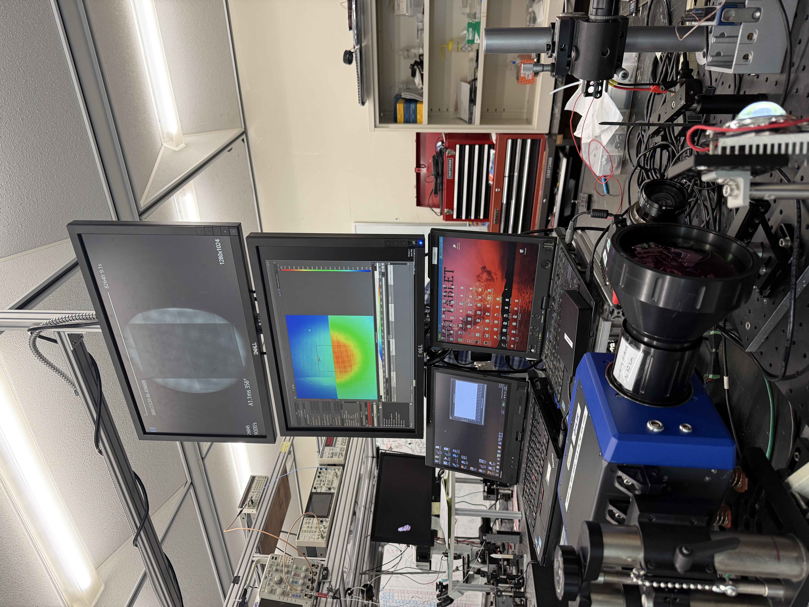
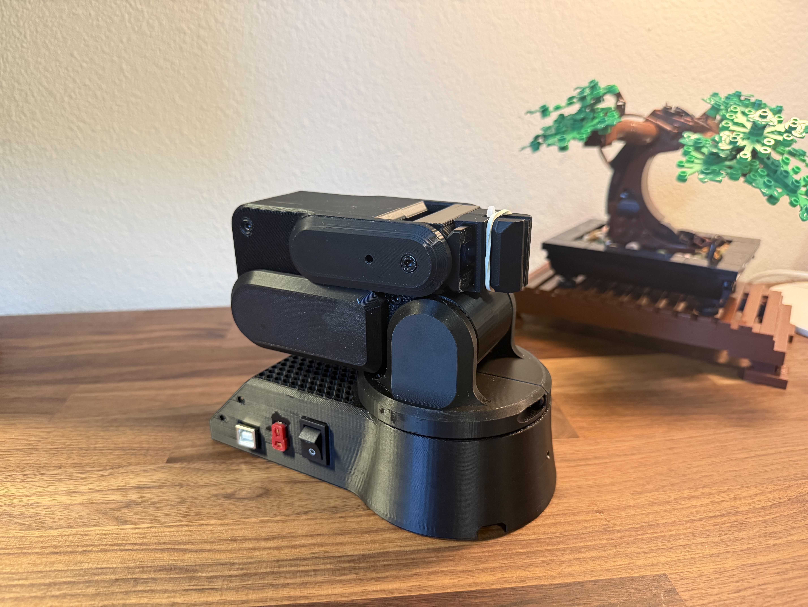
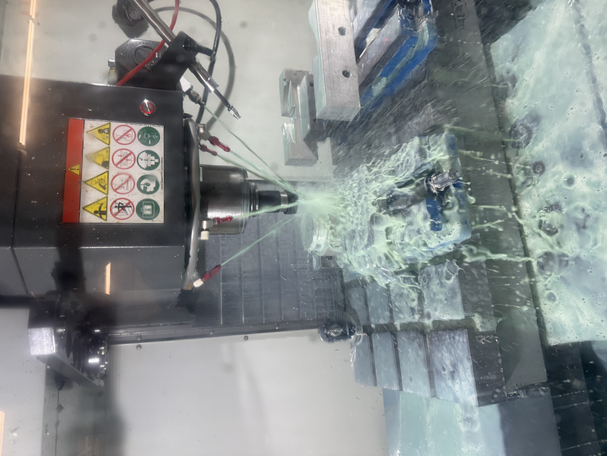
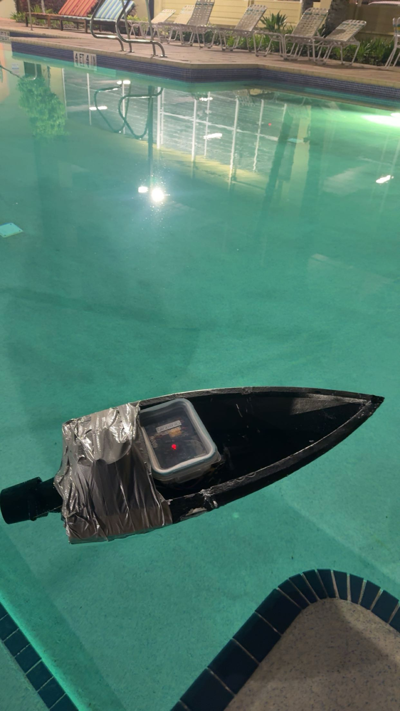
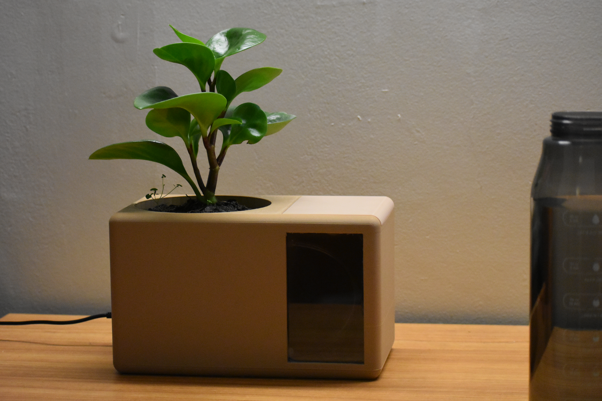
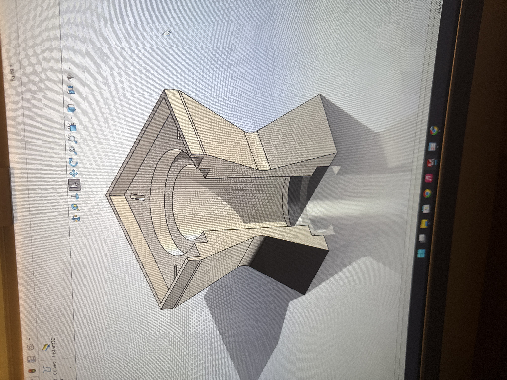

Mechanical Engineering · University of Central Florida · Graduating May 2029
I'm a Mechanical Engineering student at the University of Central Florida, expected to graduate in May 2029. From day one, I made a deliberate choice: real-world experience comes first. While I make sure I genuinely understand the fundamentals and concepts taught in class, I've poured my energy into building things, leading teams, and getting my hands dirty in labs, machine shops, and internships.
Currently interning at GE Vernova in Supply Chain Manufacturing, applying Lean and Six Sigma principles to optimize production of high-voltage grid components, while actively researching pulsating heat pipes in UCF's Interfacial Transport Lab.

When I got to college I wanted to hit the ground running. I locked in my eating habits, started tracking my calories, and got serious about the gym. That set the tone for everything else.
I had free time between summer classes so I taught myself SolidWorks. No class, just a lot of time putting in the work. By the end of summer I had my CSWA and CSWP. I also picked up the basics of Python and C++ while I was at it.
I wanted to get into research so I went through the faculty directory and emailed pretty much every professor asking to volunteer or shadow. A few invited me in for tours and I picked the one that felt like the right fit, which ended up being the Interfacial Transport Lab.
At the end of summer I finished my first project, an automatic plant watering system powered by an Arduino.
Fall was when things really picked up. I started applying to internships and put a lot of time into that. I also finished my biggest project yet, a robotic arm controlled by a smaller smaller arm using potentiometers so it mirrors movement in real time.
I joined ASME and applied to be the project lead for the Student Design Competition. Got the role and spent the year leading 60+ members to design and build a robot that could collect, sort, and dispose of waste in a mock city environment.
I also joined the Robotics Club and worked on Project Storm, a lunar rover. I was on the drive team, built out a testing dock for the rover arm, and designed a chassis that could handle up to 150 pounds of load.
At the career fair I talked with someone from GE Vernova who told me to get more manufacturing experience before applying. So I did. I joined Baja SAE as a machinist and started working in the shop on CNC lathes, manual mills, and fabrication equipment.
By the end of the year my schedule was full. I dropped the Robotics Club to keep focused on the things that mattered most going into the next semester.
Everything from freshman year added up to a summer internship at GE Vernova in Supply Chain Manufacturing. I'm working on optimizing production of high-voltage grid components and applying Lean and Six Sigma on the floor.
On the side I started a personal project building a liquid cooling loop. I'm 3D printing parts like the reservoir, testing different waterblock designs, and running ANSYS CFD to figure out which ones perform best. Basically building a GPU liquid cooling system from scratch to understand how it all works.

Supply Chain Manufacturing intern working on high-voltage grid components, applying Lean and Six Sigma on the production floor.
3D printing a full liquid cooling loop from scratch — reservoir, custom waterblocks, ANSYS CFD to compare designs.

Designed and machined a golf putter head from scratch on a CNC machine — from CAD model to finished aluminum part.

Led 60+ members to design and build a robot that collects, sorts, and disposes of waste in a mock city environment.

ANSYS CFD analysis, SolidWorks modeling, prototype fabrication, and co-authored research abstract at UCF.

4-axis arm controlled in real time by a smaller arm using potentiometers — full mirrored movement.

Machined precision competition vehicle parts on CNC lathe and manual mill to tight tolerances.

Designed, 3D printed, waterproofed, and raced a fully functional RC boat for UCF's Great Naval Orange Race.

My first engineering project. Arduino-powered automatic irrigation system with sensor-driven control.

Taught myself SolidWorks from scratch and earned both the CSWA and CSWP certifications by the end of my first summer.
Everything in one place — experience, certifications, skills, and projects.
Feel free to reach out if you have any questions, want to connect, or just want to talk engineering.